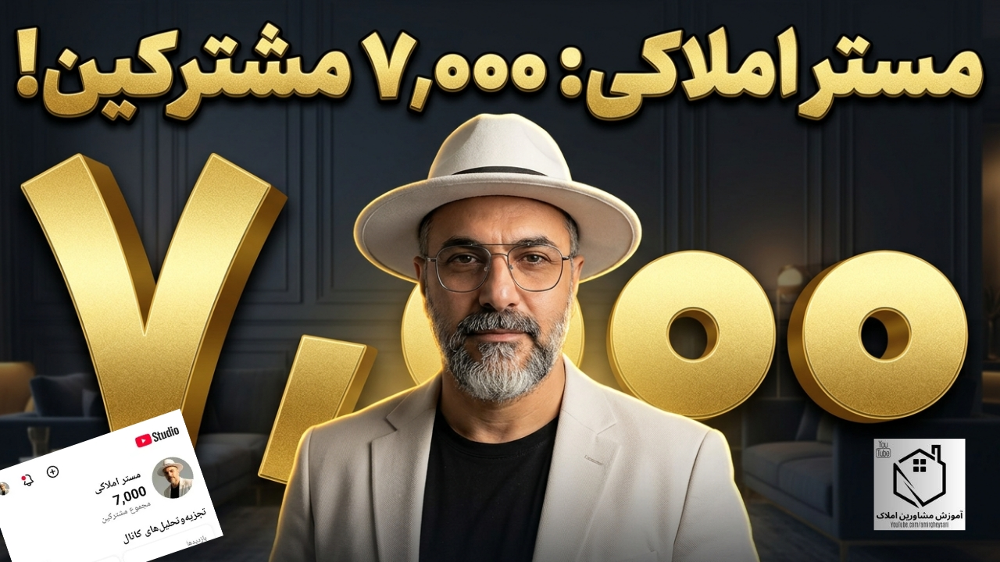

مشترک کانال یوتیوب مستر املاکی 🎉
یک عدد ساده روی صفحهی یوتیوب، ولی پشتش ساعتها ضبط، مونتاژ، لایو، و از همه مهمتر، اعتماد هفتهزار نفری هست که تصمیم گرفتن دکمهی ساباسکرایب رو بزنن. این مقاله رو دو بخش نوشتم: بخش اول، یه نگاه به مسیری که تا اینجا اومدیم و چرا این عدد مهمه؛ بخش دوم هم یه برنامهی مشخص برای رسیدن به ۱۰ هزار مشترک تا فروردین ۱۴۰۶ — نه فقط برای من، بلکه برای خودتون هم که همراه این مسیر هستید.
مسیری که تا اینجا اومدیم
چیزی که این چند ماه اخیر رو از قبل متفاوت کرد، این بود که کانال یوتیوب دیگه تنها نبود. سایت mramlaki.ir به یک اکوسیستم واقعی تبدیل شد: مقالههای تحلیلی که مکمل ویدیوها بودن (از قدرالسهم ساختمانهای قدیمیساز تا تحلیل بازار مسکن تهران، گرمابسرد و بابلسر)، صفحهی ابزارهای محاسباتی که کاربر میتونه شاخص P/R یا قسط وامش رو خودش حساب کنه، و دورهی طلایی آموزش مشاورین املاک که قدمبهقدم داره کامل میشه. هر کدوم از اینها یک دلیل جدید برای موند و برگشتن مخاطب به کانال شدن.
چرا این عدد مهمه؟
عبور از ۷ هزار مشترک فقط یک نشون افتخار نیست؛ از نظر الگوریتم یوتیوب هم یعنی محتوا داره به شکل پایدار به مخاطب جدید معرفی میشه، نه فقط به کسایی که از قبل دنبالتون میکردن. برای مخاطبها هم این عدد یعنی اعتبار بیشتر — وقتی یه نفر تازه با کانال آشنا میشه و میبینه هفت هزار نفر دیگه هم قبلاً تصمیم گرفتن دنبالش کنن، راحتتر بهش اعتماد میکنه.
برنامه رسیدن به ۱۰ هزار مشترک تا فروردین ۱۴۰۶
رسیدن از ۷ به ۱۰ هزار، یعنی رشدی حدود ۴۳ درصدی در چند ماه — عدد بزرگی نیست اگه با برنامه پیش بریم. این ۵ ستون اصلی برنامهست:
ادامهی منظم دوره طلایی آموزش مشاورین املاک
هر قسمت جدید این دوره (که تا الان به گام سوم رسیدیم) هم یک ویدیوی تازه برای کانال میسازه، هم یک صفحهی دائمی روی سایت که مخاطب جدید از گوگل هم میتونه پیداش کنه و از همونجا به یوتیوب برسه.
مقالهی همراه برای هر لایو و تحلیل بازار
همون کاری که برای لایوهای بازار مسکن تهران، بابلسر و موضوعاتی مثل تاثیر النینو انجام دادیم رو ادامه میدیم — هر لایو مهم، یک مقالهی سئوشدهی همراه داشته باشه که از گوگل هم ترافیک بیاره به کانال.
سایت بهعنوان قیف ورودی از گوگل
با ادامهی بهینهسازی سئو (چیزی که در سرچ کنسول داریم پیگیری میکنیم)، هر جستجوی مرتبط با آموزش مشاور املاک یا تحلیل بازار مسکن، یک مسیر تازه بهسمت کانال یوتیوب باز میکنه.
ربات تلگرام و بله برای نگهداشتن تعامل
ربات محاسباتی که راهاندازی کردیم، یک دلیل تازهست برای اینکه مخاطب گروه تلگرام/بله همیشه فعال بمونه و لینک ویدیوهای جدید رو هم از همونجا ببینه.
ابزارهای محاسباتی سایت بهعنوان معرف کانال
کسی که برای محاسبه قدرالسهم یا قسط وام وارد tools.html میشه، اگه نتونیم قانعش کنیم بره سراغ ویدیوهای کاملتر توی یوتیوب، یک فرصت رو از دست دادیم — این لینکها رو قویتر میکنیم.
نقش شما در این مسیر
اگه همین الان عضو گروه تلگرام یا بله مستر املاکی هستید، ممنون میشم لینک کانال یوتیوب رو با یکی دو نفر از آشناهاتون که دارن به فکر خرید، فروش یا شروع کار مشاوره املاک هستن به اشتراک بذارید. رسیدن به ۱۰ هزار، بدون کمک همین شبکهی کوچیک ولی وفادار، خیلی سختتر میشه.
جمعبندی
۷۰۰۰ فقط یک عدد نیست، نشونهی اینه که مسیر ساختن یک اکوسیستم واقعی برای آموزش و تحلیل بازار مسکن — نه فقط یک کانال ویدیویی — داره جواب میده. با ادامهی همین برنامه، رسیدن به ۱۰ هزار تا فروردین ۱۴۰۶ یک هدف کاملاً واقعبینانهست. ممنون که تا همینجا همراه بودید؛ ادامهی راه رو با هم میریم.